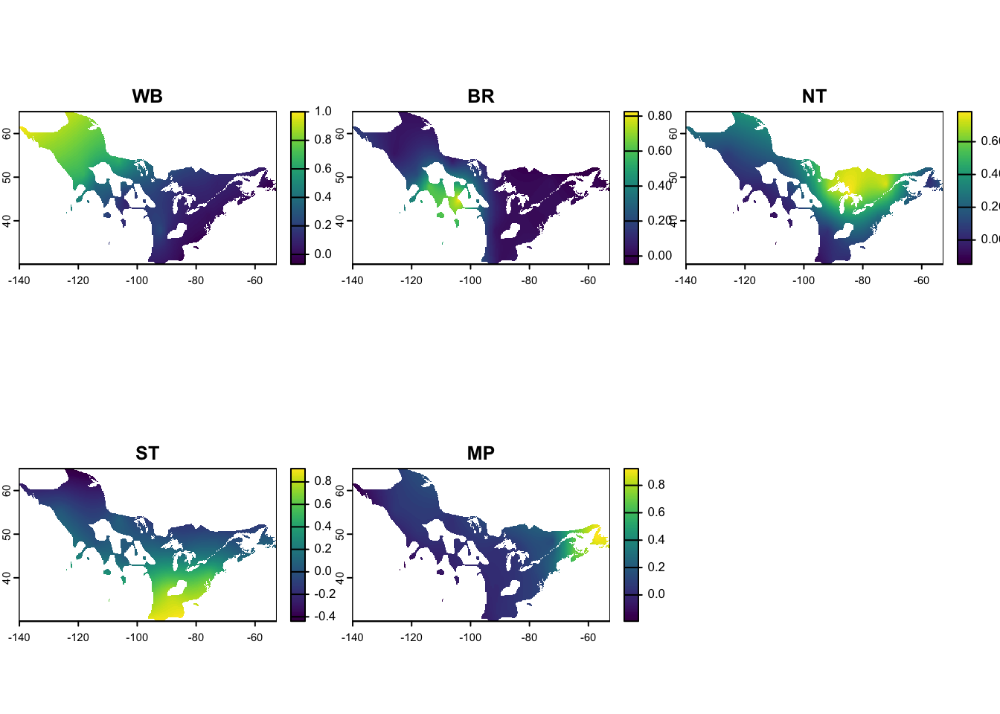

Chapter 4 Nonbreeding nodes
For the migratory networks, we will use ecoregions to define the nonbreeding nodes. However, other nonbreeding nodes could be defined by the user instead. If you already have polygons defining your nodes interest, then continue to the relative abundance section.
4.1 Subsetting ecoregions
The ecoregion data is derived from [provide link] and defines biogeographic regions in the Western Hemisphere. We provide these as external data stored as a SpatVector. We will intersect the ecoregions with the nonbreeding range of the American Redstart to identify all the ecoregions for this region.
ecoregions <- system.file("extdata", "ecoregions.Rds",
package = "mignette")
ecoregions <- terra::vect(ecoregions)
amre_nonbreeding_range <- system.file("extdata", "amre_nonbreeding_range.Rds",
package = "mignette")
amre_nonbreeding_range <- terra::vect(amre_nonbreeding_range)
amre_nonbreeding_ecoregions <- terra::intersect(amre_nonbreeding_range, ecoregions)
ggplot() +
tidyterra::geom_spatvector(data = amre_nonbreeding_ecoregions,
aes(fill = Region)) +
theme_bw()
4.2 Select sampled regions
For the purpose of the migratory network, we are only interested in nonbreeding nodes for which we have sampled data. To identify these nodes, we will intersect our sampled nonbreeding individuals locations with the ecoregion data. Additionally, since sampling locations may fall just outside an ecoregion boundary (for example, imprecise coordinates along a coast) we will identify the ecoregions by selecting the nearest ecoregion to a point.
nonbreeding_coords <- terra::vect(mignette::amre_nonbreeding_data,
geom=c("Lon", "Lat"),
crs = "EPSG:4326")
nonbreeding_coords_nearest <- terra::nearest(nonbreeding_coords,
ecoregions,
centroids = FALSE)
# Add Region ID from original file for easier interpretation
nonbreeding_coords_nearest$Region <- ecoregions$Region[nonbreeding_coords_nearest$to_id]| Var1 | Freq |
|---|---|
| Amazon/Orinoco-Northern Uplands | 21 |
| Atlantic Lowland Mexico | 22 |
| Caribbean | 69 |
| Highland Central America | 5 |
| Highland/Interior Mexico | 1 |
| Lowland Central America | 14 |
| Northern Andes | 3 |
For the migratory network, we also want sufficient sampling of a node for the model to be able to reach convergence. In the example above, we see “Highland/Interior Mexico” only has 1 sample and the “Northern Andes” only have 3 samples. Below, we use a cut off of a minimum of 4 samples to remove those ecoregions
cutoff <- 4
ecoregions_keep <- data.frame(table(nonbreeding_coords_nearest$Region)) %>%
filter(!.[2] < cutoff) %>%
pull(1) %>%
as.character()
nonbreeding_coords_nearest_subset <- nonbreeding_coords_nearest[nonbreeding_coords_nearest$Region %in% ecoregions_keep]
nonbreeding_regions_subset <- ecoregions[nonbreeding_coords_nearest_subset]This leaves us with a final set of our nonbreeding nodes and the samples associated with them:
ggplot() +
geom_spatvector(data = nonbreeding_regions_subset, aes(fill = Region)) +
geom_spatvector(data = nonbreeding_coords_nearest_subset) +
theme_bw()
Now on to getting the node assignment matrix.